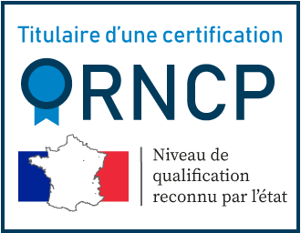
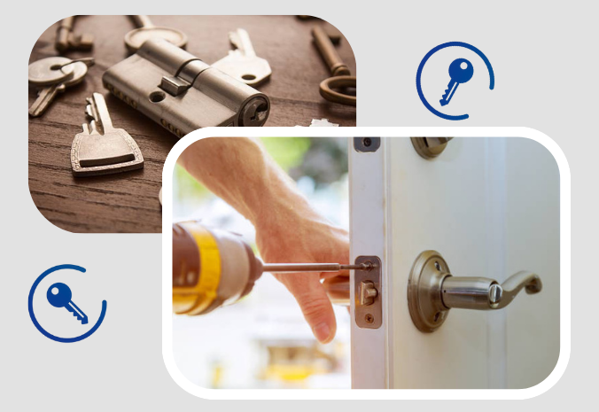
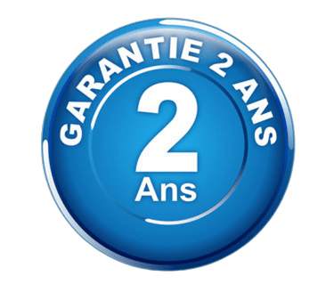
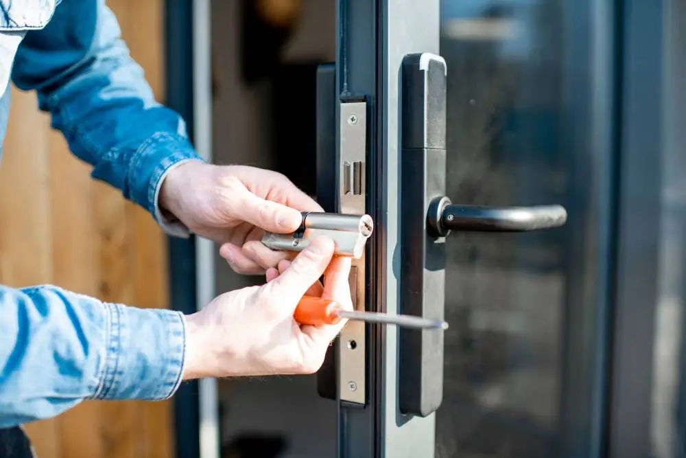
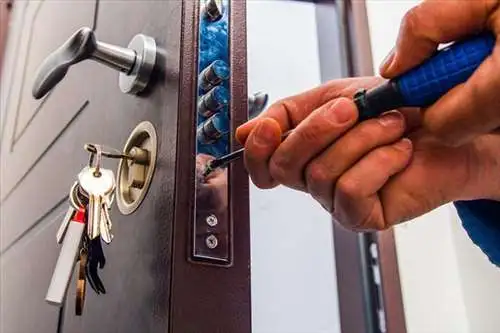
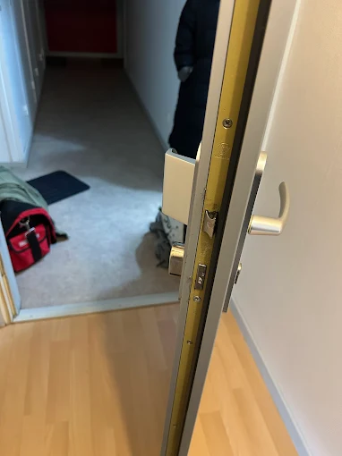
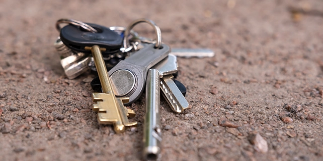

Vidéos d’interventions en serrurerie à Lille


Intervention sur Lille.
Besoin d'un serrurier en urgence à Lille
Disponible 24H/24, 7J/7 ?
à partir de 39 €


Vous êtes bloqué devant votre porte ? Vous avez perdu vos clés ou votre serrure est endommagée ? Notre service de dépannage d'urgence en serrurerie est à votre disposition 24h/24 et 7j/7 à Lille et ses alentours. Nous intervenons rapidement, avec un délai moyen de seulement 20 minutes, pour vous aider à retrouver l'accès à votre domicile ou à sécuriser vos biens.
Nos serruriers professionnels sont équipés pour gérer tous types de situations, qu'il s'agisse d'une porte claquée, d'une clé cassée dans la serrure ou d'une effraction.
Faites confiance à notre expertise pour un service rapide, fiable et abordable, où que vous soyez dans la métropole lilloise.

Toutes nos
interventions sont
garanties 2 ans
Nous sommes fiers d’être agréés par toutes les assurances, offrant ainsi à nos clients la tranquillité d’esprit qu’ils méritent.
Je vous propose une intervention en serrurerie complète : diagnostic, devis immédiat et gratuit, et suivi personnalisé. Mes services couvrent l’ouverture de portes, le remplacement de serrures et cylindres, jusqu’à l’installation de rideaux métalliques et volets roulants, le tout avec une approche soignée pour votre tranquillité.

Assurez la sécurité de votre domicile avec un remplacement de cylindre adapté à vos besoins de sécurité.

Redonnez fonctionnalité et sécurité à vos serrures endommagées grâce à notre service de réparation expert.

Accédez rapidement à votre domicile sans dommage avec notre technique d’ouverture de porte non destructive.

Perte accidentelle ou une urgence, mon expertise vous assure une solution rapide et fiable, avec un respect total de vos besoins et de votre tranquillité.
Faire appel à un serrurier à Lille certifié est essentiel pour garantir une intervention fiable et conforme aux normes de sécurité. Notre entreprise dispose d’une certification reconnue et d’une assurance professionnelle, vous assurant un travail soigné, transparent et durable. Nous intervenons pour l’ouverture de porte, le remplacement de serrure, la mise en sécurité après effraction et l’installation de systèmes de verrouillage haute sécurité.
Un serrurier professionnel ne se contente pas d’ouvrir une porte : il réalise un diagnostic précis, propose un devis clair et installe du matériel certifié (A2P, multipoints, cylindres haute sécurité). Notre priorité est votre protection et votre tranquillité dans toute la métropole lilloise.
En cas de porte claquée, clé perdue ou serrure bloquée, nous privilégions toujours une ouverture de porte sans casse. Grâce à des techniques adaptées (radio, crochetage fin, by-pass), nous intervenons rapidement à Lille 24h/24 et 7j/7.
Pour les portes verrouillées ou les serrures endommagées, nous utilisons du matériel spécialisé permettant une ouverture propre et sécurisée. Si un remplacement est nécessaire, nous installons immédiatement un cylindre ou une serrure adaptée à votre niveau de sécurité.
Les serrures certifiées A2P sont reconnues par les assurances pour leur résistance face aux tentatives d’effraction. Elles sont classées en 1, 2 ou 3 étoiles selon leur niveau de protection.
Nous vous conseillons sur le choix de votre serrure selon votre budget et votre besoin de sécurité, que ce soit pour une maison, un appartement ou un local professionnel à Lille.
Notre équipe intervient rapidement dans tous les quartiers de Lille et ses alentours :
Où que vous soyez dans la métropole lilloise, nous garantissons une intervention rapide en moyenne sous 20 minutes. Notre proximité nous permet d’assurer un dépannage efficace et au tarif annoncé.
Votre porte vient de claquer et vous vous retrouvez bloqué dehors ? C’est une situation stressante, mais fréquente à Lille comme dans toute la métropole lilloise. Avant toute chose, ne forcez pas la serrure et n’essayez pas d’introduire un objet dans le cylindre : vous risqueriez d’endommager le mécanisme et d’augmenter le coût de l’intervention.
Vérifiez d’abord s’il existe une autre entrée : fenêtre entrouverte, porte de service, accès chez un voisin. Si aucune solution n’est possible, contactez un serrurier à Lille disponible 24h/24 et 7j/7. Chez Serrurier Lille Express, nous intervenons en moyenne en 20 minutes pour une ouverture de porte claquée, de jour comme de nuit.
Une porte claquée signifie que la porte est fermée alors que la clé est restée à l’intérieur, sans verrouillage complet. Dans la majorité des cas, un serrurier professionnel peut réaliser une ouverture de porte sans casse grâce à des techniques adaptées : radio, by-pass ou crochetage fin selon le type de serrure installé.
Je réalise un diagnostic rapide sur place, je vous explique la méthode utilisée et je vous propose un devis gratuit avant toute intervention. Nos tarifs démarrent à partir de 39 € pour une ouverture de porte simple à Lille. Transparence et clarté : c’est la base d’un service de confiance.
Le délai dépend du type de porte et de serrure, mais la plupart de nos interventions sur une porte claquée durent entre 15 et 30 minutes. Notre proximité avec Lille Centre, Wazemmes, Fives, Vieux-Lille et les communes voisines nous permet d’arriver rapidement chez vous, où que vous soyez dans la métropole lilloise.
Nous couvrons notamment Lille, La Madeleine, Lambersart, Marcq-en-Barœul, Villeneuve-d’Ascq, Roubaix, Tourcoing, Croix et Wasquehal. Un simple appel suffit pour estimer notre temps d’arrivée et le tarif de votre dépannage.
Dans le cas d’une simple porte claquée, le remplacement de serrure n’est généralement pas nécessaire. Votre mécanisme reste intact et fonctionnel après l’ouverture. En revanche, si vous avez perdu vos clés ou si la serrure présente déjà des signes d’usure, je peux vous conseiller un changement de cylindre ou l’installation d’une serrure certifiée A2P pour renforcer la sécurité de votre logement.
Toutes nos interventions sont garanties 2 ans et nos prestations sont compatibles avec les démarches auprès de votre assurance. En tant que serrurier certifié RNCP, je vous garantis un travail conforme aux normes et une facture détaillée après chaque dépannage.
Ne restez pas bloqué dehors plus longtemps que nécessaire. Que votre porte ait claqué en plein jour, la nuit ou un week-end, notre équipe est mobilisée pour vous dépanner rapidement à Lille et dans toute la métropole lilloise.
Appelez le 06 51 73 29 77 pour un devis gratuit et une intervention en urgence. Faites confiance à notre expertise pour retrouver l’accès à votre domicile en toute sérénité, au tarif annoncé.
Le tarif varie selon l'intervention : à partir de 39€ pour une ouverture de porte simple. Devis gratuit par téléphone avant intervention.
Oui, nous sommes disponibles 24h/24 et 7j/7 pour tous vos dépannages d'urgence, même les jours fériés.
Ne forcez pas ! Contactez-nous immédiatement. Nos techniciens ouvrent votre porte sans casse dans la plupart des cas.
Oui, nous établissons un devis gratuit avant toute intervention. Aucune surprise sur la facturation.
Nous acceptons les espèces, chèques, cartes bancaires et virements. Facture fournie pour les assurances.
Oui, nous intervenons sur Lille et toute la métropole : Lambersart, Mons-en-baroeul, Villeneuve-d'Ascq, Marcq-en-Barœul, Croix.
Oui, nous sommes assurés décennale et nos techniciens sont certifiés. Interventions conformes aux normes A2P.
Contactez d'abord la police, puis appelez-nous. Nous sécurisons votre domicile et remplaçons immédiatement votre serrure endommagée.
Nous travaillons exclusivement avec des marques reconnues pour leur fiabilité et leur résistance afin de garantir la meilleure sécurité à nos clients.
Découvrez les avis de nos clients satisfaits concernant nos services de serrurerie à Lille. Nous nous engageons à fournir des interventions rapides et efficaces pour garantir votre sécurité.